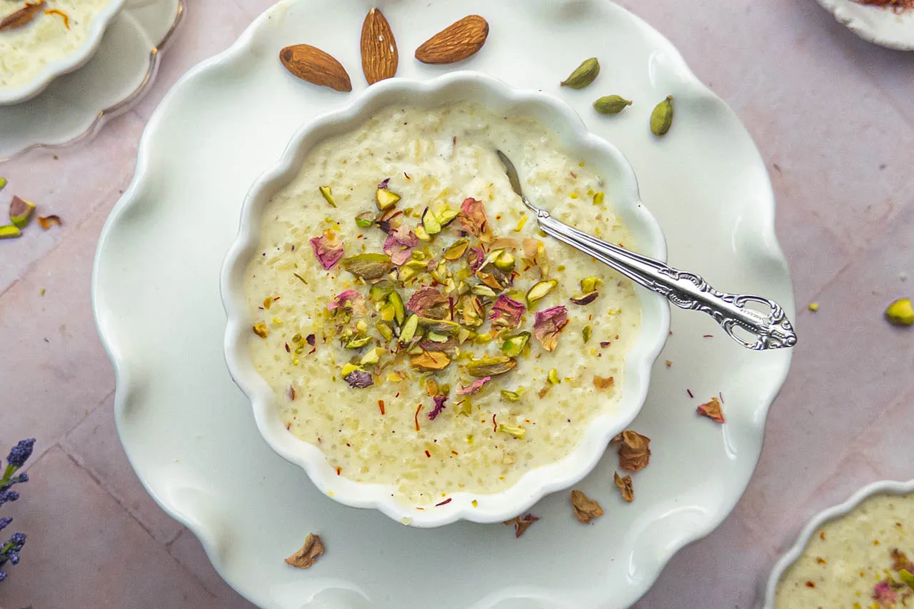

Kheer

Kheer is a traditional Indian rice pudding that is rich, creamy, and flavored with cardamom, saffron, and nuts. It's a popular dessert served during festivals, celebrations, and special occasions across India. Made with simple ingredients like rice, milk, sugar, and aromatic spices, Kheer is loved for its comforting taste and luxurious texture.
Ingredients
- 1/2 cup basmati rice
- 4 cups whole milk
- 1/2 cup sugar (adjust to taste)
- 4-5 green cardamom pods, crushed
- A pinch of saffron strands (optional)
- 2 tablespoons chopped nuts (almonds, pistachios, cashews, etc.)
- 1 tablespoon raisins (optional)
- 1 teaspoon ghee (clarified butter)
- A few strands of saffron (optional) for garnish
Steps:
- Wash and Soak the Rice: Rinse the basmati rice under cold water until the water runs clear. Then, soak the rice in water for about 20-30 minutes. Drain the rice before using.
- Prepare the Milk: In a heavy-bottomed saucepan, bring the milk to a gentle boil over medium heat. Stir occasionally to prevent the milk from sticking to the bottom of the pan.
- Add Rice and Flavorings: Once the milk comes to a boil, add the soaked and drained rice to the pan. Stir well to combine. Add crushed cardamom pods and saffron strands to the milk-rice mixture. Lower the heat to medium-low and let the rice cook in the milk, stirring occasionally.
- Simmer Until Thickened: Allow the rice to cook in the milk until it becomes soft and the milk thickens, stirring occasionally. This process can take about 30-40 minutes. Keep scraping the sides of the pan and stirring to prevent the rice from sticking to the bottom and the milk from burning.
- Add Sugar and Nuts: Once the rice is cooked and the mixture has thickened to your desired consistency, add sugar to the kheer and mix well until the sugar dissolves completely. Adjust the sweetness according to your taste. Then, add chopped nuts and raisins (if using) to the kheer and stir to combine.
- Finish with Ghee: In a small pan, heat ghee over low heat. Add the chopped nuts and sauté until they turn golden brown and aromatic. Pour this mixture into the kheer and stir well.
- Garnish and Serve: Remove the kheer from the heat. Garnish with a few strands of saffron for added aroma and flavor. Serve the kheer warm or chilled, depending on your preference. Enjoy the creamy and aromatic delight of homemade kheer as a delightful dessert or sweet treat!